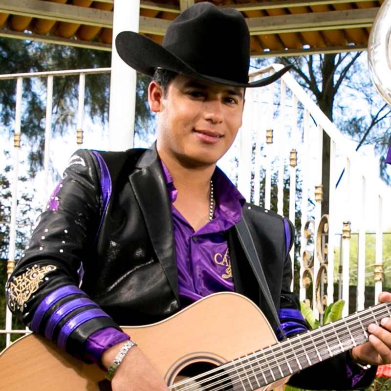
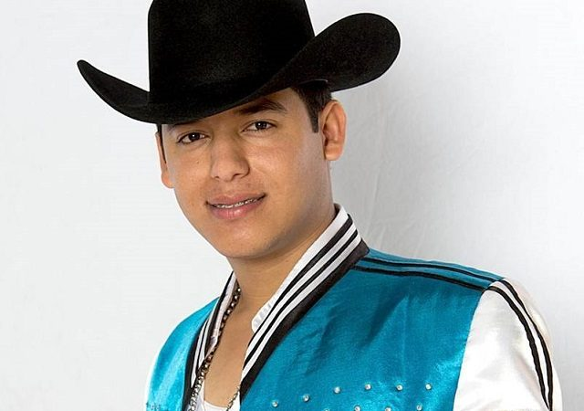
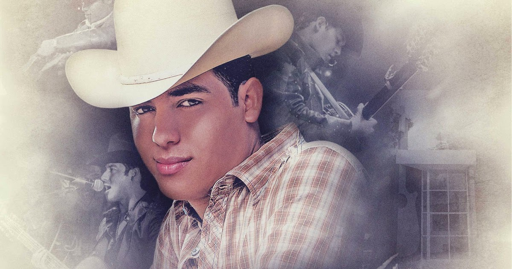

José Ariel Camacho Barraza (Guamúchil (Sinaloa); 8 de julio de 1992- Angostura (Sinaloa) 25 de febrero de 2015) Más conocido como Ariel Camacho, fue un cantante, músico y compositor mexicano, vocalista y fundador de Los Plebes del Rancho, con los que emprendió su carrera musical en 2009
Considerado uno de los mejores influyentes de este género Sierreño-Banda. Popularizandose con su primer álbum Rey de Corazones, su último álbum fue lanzado en el año 2014 titulado como El Karma. Póstumamente, en el año 2016, ganó 2 Premios Billboard de la música latina, al nuevo artista del año y a la Canción Regional Mexicana, así como otras cinco nominaciones.
Así fue como en 2013, Ariel y César comenzaron la búsqueda de otro músico que los acompañara para formar un grupo musical de regional mexicano. Encontraron a Omar Burgos, quien tocaría la tuba; César Sánchez, como segunda voz y guitarra y, Ariel Camacho, como primera voz y requinto. Había nacido, el grupo de música campirana llamado “Ariel Camacho y los Plebes del Rancho”, cuyo manager sería después Jaime González, dueño de la discografía JG Music.
integrantes de la agrupacion los plebes del rancho
Canciones de Ariel Camacho y los plebes del rancho